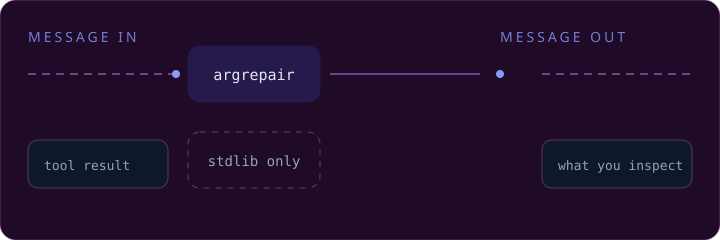

Install
consolepip install argrepair
Use
pythonfrom argrepair import parse_args, check, coerce, feedback, parse_and_check
parse_args("{'a': 1,}") # {'a': 1}
parse_args("{\"a\": True}") # {'a': True}
parse_args('```json\n{"a": 1}\n```') # {'a': 1}
problems = check({"mode": "turbo"}, {"mode": {"type": "string", "enum": ["fast", "safe"]}})
print(feedback(problems, tool="search"))
The one call a middleware needs:
pythondef run_tool(name, raw_arguments, schema, tool):
arguments, problems, message = parse_and_check(raw_arguments, schema, tool=name)
if problems:
return {"error": message} # the model gets another turn
return tool(**arguments)
Schema
python{
"path": {"type": "string", "required": True},
"bytes": {"type": "integer", "minimum": 0},
"limit": {"type": "number", "maximum": 100},
"mode": {"type": "string", "enum": ["fast", "safe"]},
"tags": {"type": "array", "items": {"type": "string"}},
"dry_run": {"type": "boolean"},
}
type is one of string, integer, number, boolean, object, array, null. A boolean is not an integer here, and 1.5 is not an integer — the two mistakes that turn into silent data loss downstream. Unknown fields are reported as unexpected, so a model that invents colour: "red" is told so instead of the value being dropped.
What is repaired, and what is refused
| input | result |
|---|---|
{'a': 1} | parsed |
{"a": True, "b": None} | parsed |
{"a": 1,} | parsed |
{"a": 1} // note | parsed |
`json {…} ` | parsed |
{"a": 'x'} (single quotes inside JSON quotes) | refused, so a real ' in a value is never mangled |
[1, 2] | refused: arguments must be an object |
not json at all | a message, not an exception, via parse_and_check |
Coercion is deliberately narrow: "42" → 42, "1.5" → 1.5, "true"/"yes"/"on"/"1" → True, 3 → "3" for a string field, a lone value → a one-item array. Anything else stays as it was and is reported by check.
Limits
- This is a small schema, not JSON Schema: no
oneOf, nopattern, no nested objects.
Reach for jsonschema when you need that; this library is about the message.
- Repairs are heuristic. A payload that is genuinely ambiguous is refused rather than
guessed at.
- It validates the shape of the arguments, not their meaning — whether the path exists is
still the tool's job.
Development
consolepython -m venv .venv
.venv/bin/pip install -e ".[test]"
.venv/bin/pytest
The suite covers every line of the package (pytest --cov --cov-branch), and the examples in the docstrings run as tests through --doctest-modules.
License
MIT.
Other libraries here
One problem each, standard library only, no runtime dependencies.
- backoff-headers — turn a rate-limit header into the exact time to wait
- columncheck — find the CSV defect before the pipeline does
- dir-digest — one hash for a directory tree, identical on every OS
- docanchor — catch every broken heading anchor in your docs
- envfile-diff — diff two .env files without printing the secrets
- fsync-replace — replace a file so a crash cannot leave it half-written
- header-date — HTTP dates parsed strictly, formatted correctly
- junit-merge — merge JUnit XML from every job into one honest report
- npm-semver — npm semver ranges, parsed the way npm parses them
- outputcap — keep a huge tool result out of the context window
- parse-size — byte sizes in and out, MB and MiB never confused
- path-containment — keep untrusted paths inside their directory
- redactscope — stop secrets in tool results before they reach the model
- runbudget — a per-run cost cap that warns before it stops
- testflakes — rank your flaky tests from the history you already have
- tool-loop-guard — catch an agent repeating itself while it is still cheap
- toolcall-ledger — a hash-chained record of every tool call
- toolcircuit — stop retrying a tool that is down
- toolquota — client-side rate limits your agent loop can wait on
- wheeldeps — read a wheel's dependencies offline, markers included
- zip-deterministic — byte-identical archives, build after build